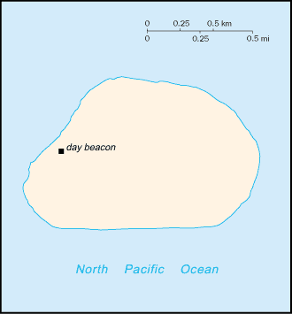
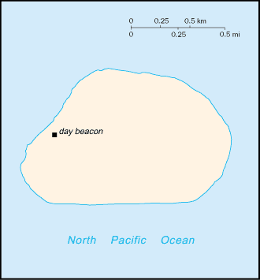

Australia - Oceania ::
Baker Island
-
Geography :: Baker Island
-
Natural hazards:
fringing reef surrounding most of the island can pose a maritime hazard
Environment - current issues:
no natural fresh water resources
-
Government :: Baker Island
-
Country name:
etymology:
named after Captain Michael BAKER who visited the island in 1832 and again in 1839, when he claimed it for the United States
 
